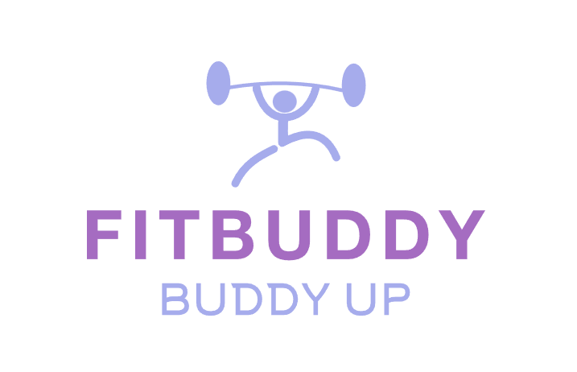

About us
Login
Recommendation
Tracking
What is your desired outcome?
Choose one of the goals below
Weight Loss
Fat Loss
Weight Gain
Muscle Gain
Overall Fitness
Here is your recommended workout plan
Here is your curated meal plan